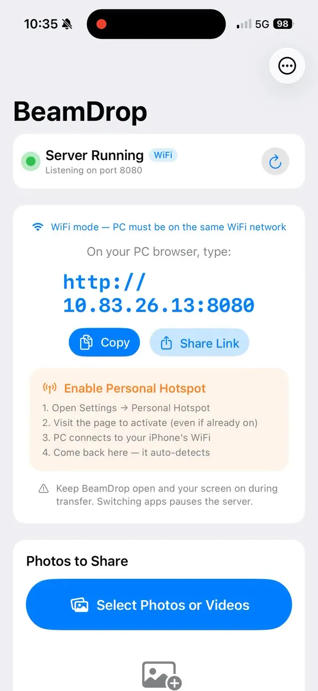
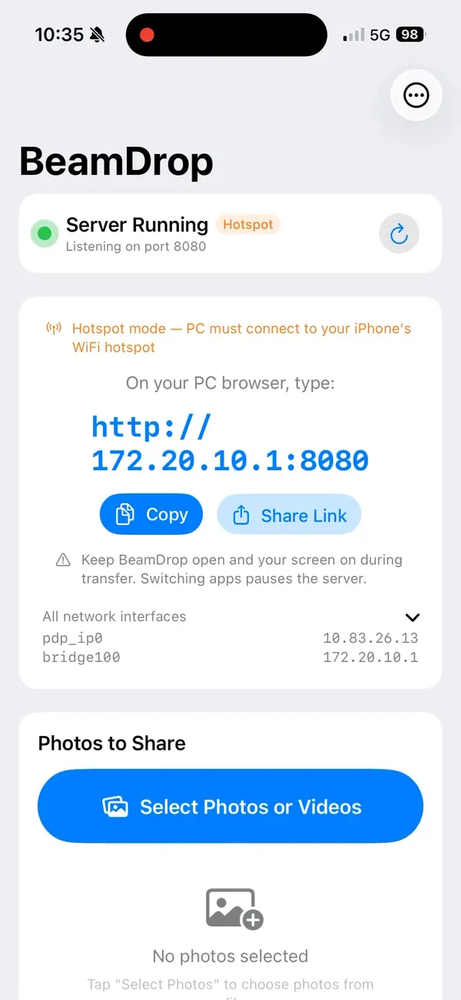
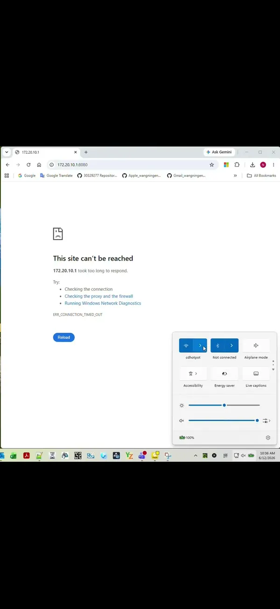

Move photos & videos from your iPhone to any computer — instantly.
BeamDrop turns your iPhone or iPad into a tiny local web server. Pick your photos and videos, open the shown address in any browser on your PC or Mac, and download them at full resolution — over local Wi-Fi or Personal Hotspot. No USB cable, no cloud upload, no sign-in.
Watch a 90-Second Walkthrough
From granting access on iPhone to downloading on a Windows PC — the whole flow, start to finish.
How It Works
Two sides, a handful of taps. Your iPhone shares; your computer downloads.
On your iPhone


http://172.20.10.1:8080.On your computer

Why People Use BeamDrop
A focused tool that does one thing well — getting your media off your phone, quickly and privately.
🔌 No Cables
Forget USB cables, dongles, and iTunes. Everything happens over your local Wi-Fi or Personal Hotspot.
☁️ No Cloud
Files go straight from your iPhone to your computer. Nothing is ever uploaded to a third-party server.
🔒 No Account
No sign-up, no login, no tracking. Open the app and start sharing in seconds.
🖼️ Full Resolution
Photos and videos transfer as the original files — no recompression, no quality loss.
⚡ Blazing Fast
Local network speeds mean large videos and big batches download in moments, not minutes.
💻 Works Everywhere
Any device with a browser can receive files — Windows, Mac, Linux, tablets, even another phone.
👁️ Preview First
See thumbnails in the browser, pick exactly what you want, or tap Download All for the whole set.
🛫 Travel Friendly
Personal Hotspot mode means you can transfer anywhere — no shared Wi-Fi network required.
Private by Design
BeamDrop never collects your data and never sends your photos or videos to the cloud. The app runs a lightweight web server directly on your iPhone, and files transfer only across your own local network to the computer you choose. There are no accounts, no analytics, and no advertising. When you close the app, the server stops. See our Privacy Policy for details.
FAQ
Do I need a cable to transfer photos from iPhone to PC?
No. BeamDrop transfers over a local Wi-Fi network or your iPhone's Personal Hotspot. No USB cable, no iTunes, and no cloud upload are required.
Does BeamDrop upload my photos to the cloud?
No. Files move directly from your iPhone to your computer over the local network. Nothing is uploaded to any server and no account is needed.
Which computers and browsers are supported?
Any device with a modern web browser — Windows, macOS, Linux, or another phone or tablet. Just open the address BeamDrop shows.
What address do I type on my computer?
BeamDrop displays a local URL in the app, for example http://172.20.10.1:8080. Type that exact address into your browser. Tap refresh in the app if it isn't shown yet.
Are photos and videos transferred at full resolution?
Yes. BeamDrop sends the original files at full quality, with no recompression.
Why is the connection not working?
Make sure your iPhone and computer are on the same Wi-Fi network, or that your computer is connected to your iPhone's Personal Hotspot. Keep BeamDrop open and your iPhone awake during the transfer.
What iOS version is required?
iOS 17.0 or later, on iPhone and iPad.
How do I contact support?
Email wangning.engineer@outlook.com. Typical response time is 24–48 hours.